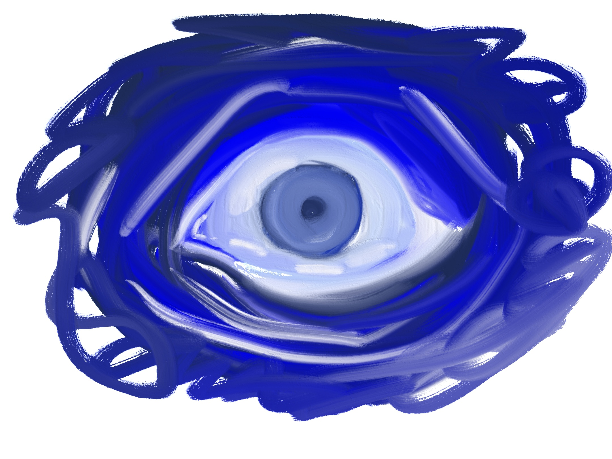
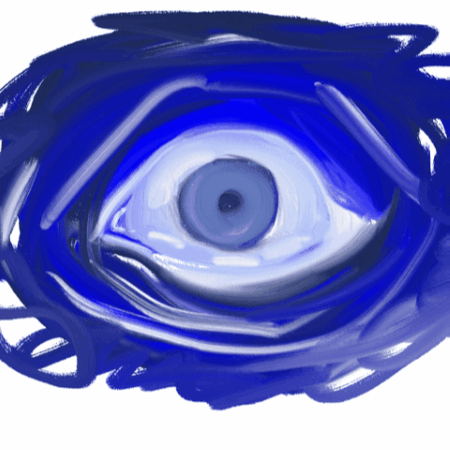
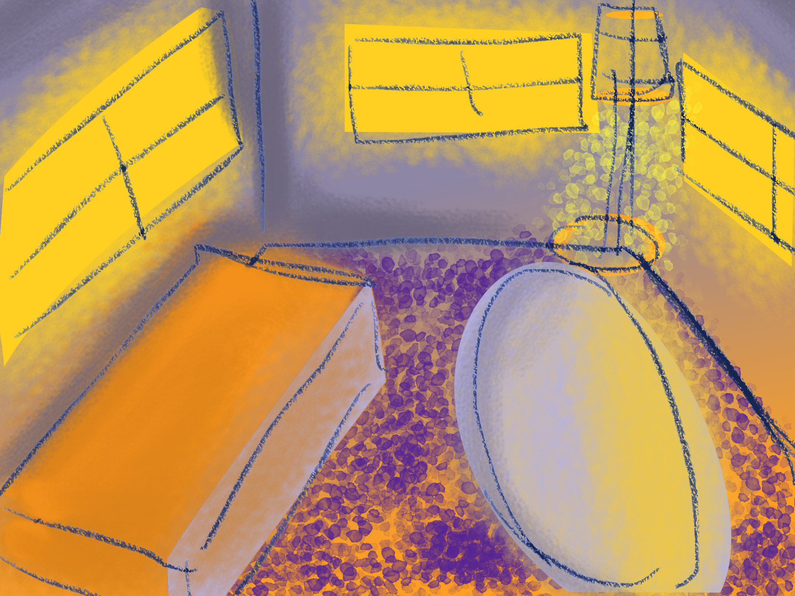
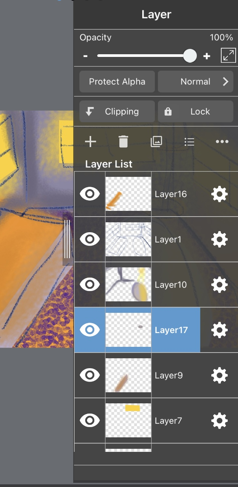

Homework 5
Vector Emotive Eye


.png)
.gif)
Emotive Eye: For my emotive eyes I originally wanted to do anger that’s why I had the flames but I’ve been going through a whole process on acknowledging how anger is a secondary emotion, it usually hides the primary one. In society I personally feel like anger is an “acceptable emotion”. What I mean by that is people tend have a problem with being emotional, only associating that term with crying or sadness, but since anger is seen as a masculine emotion it’s seen as more acceptable by society. So I drew the a different eye. Emotion isn’t just the visual, it’s actually more dangerous because what you see isn’t always what is. I also changed the style, I don’t like hard lines when it comes to most things, my favorite medium is oil pastel because of how soft and blend able it is, so I used the shape tool and a combination of brushes to get this effect across 5 layers
Illustrated Environment



Environment: I’m also a studio art major so I had to do a physical painting of an illustrated environment too and I thought it would be interesting to do a play on the inverse with the same colors One of the reasons why I was never pushed to do digital art was because I like the look of physical art materials and still do. But I realized I could bring that feel to digital work too. I used a lot of transparent overlays for this one.
Transformation and Color: blue, orange, and purple